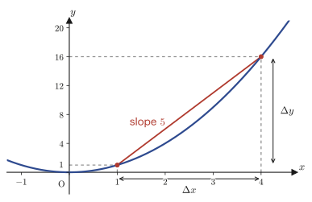
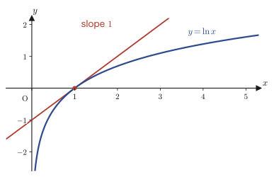
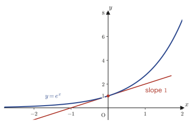
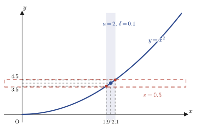

Chapter 1The Rigorous Definition of Limits and an Introduction to Differentiation
In high school mathematics, we have handled limits by feel, as in the statement “as we make $n$ arbitrarily large, $a_n$ gets arbitrarily close to $\alpha$.” The phrase “gets arbitrarily close” is easy to grasp intuitively, but on reflection it is vague. Just how close is “arbitrarily close” supposed to be? For any sequence whatsoever, and whatever standard of closeness we bring, can we really assert that the sequence gets close enough to meet that standard? Within the scope of high school mathematics, there was no tool for answering this question.
To remove this vagueness, this chapter studies the arguments one learns first in university mathematics—the $\varepsilon$-$N$ argument (read “epsilon-N argument”) and the $\varepsilon$-$\delta$ argument (read “epsilon-delta argument”). This is a shift in thinking: we first fix the “standard of closeness” as a positive number $\varepsilon$ (epsilon), and then guarantee that “going far enough to meet that standard” is possible by the existence of a natural number $N$ or a positive number $\delta$ (delta). At first you may be bewildered by all the symbols, but this is precisely the only rigorous definition of the limit of a sequence and the limit of a function, and all the chapters from here on (continuity, the mean value theorem, convergence of series, existence of solutions of differential equations, …) are built on this definition. In the second half we change the subject: we take the “differentiation” that you also studied in high school and reinterpret it, using the same language of limits, as “the limit of the average rate of change,” arriving at the defining formula of the derivative. Along the way, we also solve the mystery of why the base of the natural logarithm, Napier's constant $e$ (also called Euler's number), is defined by the seemingly strange expression $\displaystyle\lim_{x\to0}(1+x)^{1/x}$.
- The rigorous definition of convergence of a sequence (the $\varepsilon$-$N$ argument): $\forall\varepsilon\gt0,\ \exists N\in\N,\ \text{s.t.}\ n\ge N\Rightarrow|a_n-\alpha|\lt\varepsilon$
- The rigorous definition of the limit of a function (the $\varepsilon$-$\delta$ argument): the three cases $x\to\infty,\ x\to-\infty,\ x\to a$
- Mastering the $\varepsilon$-$N$ argument: proving the Cesàro-mean-type theorem, d'Alembert's ratio test, and the squeeze theorem for yourself
- From the average rate of change $\dfrac{\Delta y}{\Delta x}$ to its limit, the derivative at a point and the derivative as a function
- Why Napier's constant $e=\displaystyle\lim_{x\to0}(1+x)^{1/x}$ is defined as it is, and the fundamental limit $\displaystyle\lim_{x\to0}\frac{e^x-1}{x}=1$
- The defining formula of the derivative $f'(x)=\displaystyle\lim_{h\to0}\frac{f(x+h)-f(x)}{h}$
Source notes: Yasuhide Mochizuki, Mathematics Notes: Calculus, pp. 1–10.
1.1 Writing the Convergence of a Sequence as a Logical Formula: The $\varepsilon$-$N$ Argument
When we say in high school mathematics that “the sequence $\{a_n\}$ converges to $\alpha$,” what we have in mind is probably an image like the following. “As we increase $n$ through $1,2,3,\dots$, $a_n$ gradually approaches $\alpha$, and once $n$ is sufficiently large, the difference between $a_n$ and $\alpha$ becomes as small as we like.” This image itself is correct. The problem is that the phrases “as small as we like” and “sufficiently large” rely on feel rather than on mathematical formulas. As it stands, we cannot prove, in a way that leads everyone to the same conclusion, whether a given sequence really converges.
So we change our way of thinking. We fix the “standard of closeness” first. No matter how strict a standard (that is, no matter how small a positive number) is brought to us, we can prepare in response an index such that “from that index on, the standard is satisfied”—we regard this as the true nature of the convergence of a sequence. The positive number expressing this “standard” is conventionally written $\varepsilon$ (epsilon, the Greek letter corresponding to the English $e$), and the natural number that guarantees “from that index on” is written $N$.
Before getting into abstract symbols, let us first check with a concrete sequence. The sequence $a_n=\dfrac1n$ ($n=1,2,3,\dots$) seems, intuitively, to converge to $0$. Let us fix the “standard of closeness” $\varepsilon$ at several concrete values and actually look for the corresponding $N$.
| $\varepsilon$ | Condition for $\dfrac1n\lt\varepsilon$ to hold | An example of an $N$ that can be chosen |
|---|---|---|
| $0.1$ | $n\gt10$ | $N=11$ |
| $0.01$ | $n\gt100$ | $N=101$ |
| $0.001$ | $n\gt1000$ | $N=1001$ |
As this table shows, each time we tighten the “standard of closeness” $\varepsilon$ to $1$/$10$ of its previous value, the required $N$ grows by a factor of roughly $10$. However small we make $\varepsilon$, though, a corresponding (finite) $N$ can always be found—the following Definition 1.1 formulates this fact, “for every $\varepsilon$ there exists a corresponding $N$,” not as a statement about a particular sequence or particular numerical values but as a property that should hold for any sequence and any $\varepsilon$.
Definition 1.1: Convergence of a sequence (the $\varepsilon$-$N$ argument)
For a sequence $\{a_n\}$ and a real number $\alpha$, if
\begin{equation} \forall\varepsilon\gt0,\ \exists N\in\N\ \text{s.t.}\ n\ge N \Rightarrow |a_n-\alpha|\lt\varepsilon \label{eq:1-epsilon-N} \end{equation}holds, we say that $\{a_n\}$ converges to $\alpha$, and we write $\displaystyle\lim_{n\to\infty}a_n=\alpha$.
For readers seeing them for the first time, let us explain the three symbols that appear in this definition.
- $\forall$ (for all): read as “for every” or “for any.” “$\forall\varepsilon\gt0$” means “for every $\varepsilon$ (satisfying the condition of being a positive number),” and it expresses that the side of $\varepsilon$ can raise no objection, whichever value is chosen.
- $\exists$ (there exists): read as “there exists ….” “$\exists N\in\N$” means “there exists some $N$ (among the natural numbers) such that,” and it expresses that the side of $N$ may choose conveniently after seeing the value of $\varepsilon$.
- $\text{s.t.}$ (such that): read as “such that it satisfies ….” It serves to specify, by the condition that follows, the property of the existence symbol $\exists N$ placed immediately before it.
What matters is the order in which the symbols are lined up. In Eq. \eqref{eq:1-epsilon-N}, “$\forall\varepsilon$” is written first and “$\exists N$” afterward. This means the following order: first the opponent (or you yourself) chooses $\varepsilon$ arbitrarily, and only after that may you choose $N$ according to the $\varepsilon$ that was chosen. In general the value of $N$ may depend on the value of $\varepsilon$ (in fact, in most cases it does). For example, if we tighten $\varepsilon$ from $1/10$ to $1/1000$, we will usually need to re-choose $N$ as well, making it larger.
Caution: Do not reverse the order
A mistake often made by people who have just started university is to reverse this order and read the definition as “first fix $N$, and then adjust $\varepsilon$ to match it.” But Definition 1.1 is nothing but the claim that “whatever $\varepsilon$ (however strict a standard) is given first, we can prepare $N$ in response (after the fact),” and not the claim that “we first fix a single $N$ and then consider only those $\varepsilon$ that are convenient for it.” Note that if the order of $\forall$ and $\exists$ is swapped, we get a completely different (and almost meaningless) statement.
Intuition: The tighter ε is, the larger N becomes
To grasp the meaning of Definition 1.1 intuitively, think of it as follows. Bring the positive number $\varepsilon$ closer and closer to $0$—say from $0.1$ to $0.01$, $0.001$, … (that is, demand ever stricter precision). Then the value of $N$ that we need generally grows larger and larger. Yet however small we make $\varepsilon$, a corresponding finite $N$ can always be found—this is the content of $\lim_{n\to\infty}a_n=\alpha$. The definition of convergence is what guarantees that, however far we tighten $\varepsilon$, we never run into a wall at which “$N$ can no longer be found.” Incidentally, as a mental image of $\varepsilon$ itself, it is good to picture “an unimaginably small number that is not $0$” (for example, $\varepsilon=0.00000\cdots0001$). Note, however, that $\varepsilon$ is strictly a positive real number, and not $0$ itself.
Example 1.1: Showing that $\displaystyle\lim_{n\to\infty}\frac{2n+1}{n+1}=2$ by the $\varepsilon$-$N$ argument
For the sequence $a_n=\dfrac{2n+1}{n+1}$ ($n=1,2,3,\dots$), show that $\displaystyle\lim_{n\to\infty}a_n=2$ using the $\varepsilon$-$N$ argument.
Solution. By Definition 1.1, it suffices to show that, for $\forall\varepsilon\gt0$, there exists a natural number $N$ such that $n\ge N\Rightarrow|a_n-2|\lt\varepsilon$. First we compute $|a_n-2|$.
$$ a_n-2=\frac{2n+1}{n+1}-2=\frac{2n+1-2(n+1)}{n+1}=\frac{2n+1-2n-2}{n+1}=\frac{-1}{n+1} $$(We put everything over a common denominator, expanded the numerator, and then subtracted the $2n$ terms from each other and the constant terms from each other.) Hence
$$ |a_n-2|=\left|\frac{-1}{n+1}\right|=\frac{1}{n+1} $$(since $n+1\gt0$ whenever $n\ge1$, the absolute value can be removed). Therefore, $|a_n-2|\lt\varepsilon$ is equivalent to
$$ \frac{1}{n+1}\lt\varepsilon \iff n+1\gt\frac{1}{\varepsilon} \iff n\gt\frac{1}{\varepsilon}-1 $$(both sides are positive, so we used the fact that taking reciprocals of both sides of an inequality reverses its direction). Hence, if we take the natural number $N$ so that
$$ N\gt\frac{1}{\varepsilon}-1 $$holds (for example, by taking $N=\left\lceil\dfrac{1}{\varepsilon}\right\rceil$), then for $n\ge N$ we have $n\gt\dfrac1\varepsilon-1$, and therefore $|a_n-2|\lt\varepsilon$. From the above,
$$ \forall\varepsilon\gt0,\ \exists N\in\N\ \text{s.t.}\ n\ge N\Rightarrow|a_n-2|\lt\varepsilon $$has been shown, so $\displaystyle\lim_{n\to\infty}\frac{2n+1}{n+1}=2$. (In fact, we confirmed numerically that for $\varepsilon=0.1,0.01,0.001$ the inequality holds from $N=10,100,1000$ onward.)
1.2 Writing the Limit of a Function as a Logical Formula: The $\varepsilon$-$\delta$ Argument
In the previous section we gave a rigorous definition of the limit of a sequence (which may be regarded as a function whose variable is a natural number $n$). The same idea applies to the limit of a general function $f(x)$ whose variable is a real number $x$. For sequences, the condition “once $n$ has advanced far enough” was expressed by a natural number $N$. For functions, the way the condition is written changes subtly depending on the target that $x$ “approaches arbitrarily closely.” The original notes divide this into three cases, so let us go through them in order. In every case the idea is exactly the same as in the $\varepsilon$-$N$ argument, with a positive number $\delta$ (delta) taking over the role of $N$.
Here, too, before moving on to abstract symbols, let us check with concrete numbers. Let $f(x)=3x-1$ and consider the limit as $x\to2$. Since $f(2)=5$, it seems that $\displaystyle\lim_{x\to2}f(x)=5$. Because $|f(x)-5|=|(3x-1)-5|=|3x-6|=3|x-2|$ is a simple proportional relation, once we decide the “precision at the destination” $\varepsilon$, we can determine the “closeness at the starting point” $\delta$ concretely in terms of $\varepsilon$.
| $\varepsilon$ | Condition for $3|x-2|\lt\varepsilon$ | An example of a $\delta$ that can be chosen |
|---|---|---|
| $0.3$ | $|x-2|\lt0.1$ | $\delta=0.1$ |
| $0.03$ | $|x-2|\lt0.01$ | $\delta=0.01$ |
| $0.003$ | $|x-2|\lt0.001$ | $\delta=0.001$ |
Here, too, each time $\varepsilon$ is tightened to $1$/$10$ of its previous value, the required $\delta$ also shrinks to about $1$/$10$ of its previous value (in this example there is the simple proportional relation $\delta=\varepsilon/3$). The following Definition 1.2 formulates this fact, “for every $\varepsilon$ there exists a corresponding $\delta$,” not for a particular function and particular numbers, but as a property that should hold for a general function $f(x)$ and a real number $a$.
Definition 1.2: Limit of a function (the $\varepsilon$-$\delta$ argument)
(I) As $x\to\infty$:
\begin{equation} \forall\varepsilon\gt0,\ \exists\delta\gt0\ \text{s.t.}\ x\gt\delta \Rightarrow |f(x)-P|\lt\varepsilon \label{eq:1-eps-delta-pinf} \end{equation}When this holds, we say that $\displaystyle\lim_{x\to\infty}f(x)=P$. In other words, no matter how small a positive number $\varepsilon$ we are given beforehand, there exists a $\delta$ such that “if $x$ is greater than this positive number $\delta$, then $|f(x)-P|\lt\varepsilon$.”
(II) As $x\to-\infty$:
\begin{equation} \forall\varepsilon\gt0,\ \exists\delta\lt0\ \text{s.t.}\ x\lt\delta \Rightarrow |f(x)-P|\lt\varepsilon \label{eq:1-eps-delta-ninf} \end{equation}When this holds, we say that $\displaystyle\lim_{x\to-\infty}f(x)=P$. The only difference from (I) is that $\delta$ is a negative number and the condition is “$x\lt\delta$” ($x$ is smaller than $\delta$, that is, lies farther out in the negative direction).
(III) As $x\to a$ (where $a$ is a real number):
\begin{equation} \forall\varepsilon\gt0,\ \exists\delta\gt0\ \text{s.t.}\ 0\lt|x-a|\lt\delta \Rightarrow |f(x)-P|\lt\varepsilon \label{eq:1-eps-delta-a} \end{equation}When this holds, we say that $\displaystyle\lim_{x\to a}f(x)=P$.
Let us break down the meaning of the condition $0\lt|x-a|\lt\delta$ in (III). $|x-a|\lt\delta$ means “$x$ lies at a distance less than $\delta$ from $a$” (the same as $a-\delta\lt x\lt a+\delta$). On top of that, there is the further condition $0\lt|x-a|$, that is, $x\neq a$. This expresses that the limit of a function does not concern the value $f(a)$ at $x=a$ itself (a limit can be considered even if $f$ is not defined at $a$). What the limit looks at is strictly the behavior of $f(x)$ near $a$ (but with $a$ itself excluded).
Intuition: Narrowing the δ-neighborhood makes the destination fall inside the ε-neighborhood as well
(III) is easy to understand with a picture. On the $x$-axis, take an interval of width $2\delta$ centered at $a$ (the $\delta$-neighborhood). The images $f(x)$ under the function $f$ of the points $x$ in this interval (excluding $a$ itself) always lie inside an interval of width $2\varepsilon$ on the $y$-axis centered at $P$ (the $\varepsilon$-neighborhood)—this is the meaning of $\lim_{x\to a}f(x)=P$. And what Definition 1.2 asserts is that, no matter how demanding we make $\varepsilon$ (the precision required at the destination), we can choose $\delta$ (the matching closeness at the starting point) appropriately in response. Whereas the $N$ of the $\varepsilon$-$N$ argument was “a number that can be chosen in response to $\varepsilon$,” the $\delta$ of the $\varepsilon$-$\delta$ argument is “a width that can be chosen in response to $\varepsilon$”; the roles are exactly the same.
Example 1.2: Showing $\displaystyle\lim_{x\to2}x^2=4$ by the $\varepsilon$-$\delta$ argument in form (III)
For $f(x)=x^2$, show that $\displaystyle\lim_{x\to2}f(x)=4$ using the $\varepsilon$-$\delta$ argument of Definition 1.2(III).
Solution. For $\forall\varepsilon\gt0$, we show that there exists a $\delta\gt0$ such that $0\lt|x-2|\lt\delta\Rightarrow|x^2-4|\lt\varepsilon$. First we factor $|x^2-4|$.
$$ |x^2-4|=|(x-2)(x+2)|=|x-2|\cdot|x+2| $$(We used the factorization $x^2-4=(x-2)(x+2)$ already learned in high school, and the fact that the absolute value of a product equals the product of the absolute values.) Now, $|x-2|$ is a quantity that we ourselves keep within $\delta$, so if we impose the restriction $\delta\le1$ in advance, then $|x-2|\lt\delta\le1$ gives $1\lt x\lt3$, and therefore we obtain the estimate
$$ |x+2|\lt3+2=5 $$(on the range $x\lt3$, $|x+2|=x+2$ is less than $5$ even at its largest). In this case, we have
$$ |x^2-4|=|x-2|\cdot|x+2|\lt\delta\cdot5=5\delta $$Therefore, if we choose $\delta$ so that $5\delta\le\varepsilon$, that is, so that $\delta\le\varepsilon/5$, then $|x^2-4|\lt\varepsilon$ is guaranteed. To satisfy both of the two constraints above ($\delta\le1$ and $\delta\le\varepsilon/5$) at once, we take
$$ \delta=\min\left(1,\ \frac{\varepsilon}{5}\right) $$(here $\min$ denotes the operation of choosing the smaller of two numbers). For this $\delta$, if $0\lt|x-2|\lt\delta$, then the estimate above can be used as it stands, and we get $|x^2-4|\lt5\delta\le\varepsilon$. Hence we have
$$ \forall\varepsilon\gt0,\ \exists\delta=\min(1,\varepsilon/5)\gt0\ \text{s.t.}\ 0\lt|x-2|\lt\delta\Rightarrow|x^2-4|\lt\varepsilon $$and $\displaystyle\lim_{x\to2}x^2=4$ has been shown. (We confirmed numerically that, for $\varepsilon=0.5,0.1,0.01$, this $\delta$ does in fact satisfy the inequality.)
1.3 Mastering the $\varepsilon$-$N$ Argument
Memorizing a definition does not by itself make it a tool you can use. In this section we put the $\varepsilon$-$N$ argument to actual use: we give examples of proving the convergence of concrete sequences, and we prove head-on, with the $\varepsilon$-$N$ argument, two important theorems that you may know only by name from high school (or may be hearing of for the first time)—d'Alembert's ratio test (named after the French mathematician Jean le Rond d'Alembert) and the squeeze theorem. In high school we merely used these as “that's just how it is,” but with the help of the argument we can explain completely why they are correct.
Illustration 1.1: Proof that $\displaystyle a_n=\frac{n^2-1}{n^2+1}\ \to\ 1$
For the sequence $a_n=\dfrac{n^2-1}{n^2+1}$ ($n=1,2,3,\dots$), show that $\displaystyle\lim_{n\to\infty}a_n=1$ using the $\varepsilon$-$N$ argument.
Solution. First we rewrite $a_n$ in a form that produces the denominator $n^2+1$ in the numerator.
$$ a_n=\frac{n^2-1}{n^2+1}=\frac{(n^2+1)-2}{n^2+1}=1-\frac{2}{n^2+1} $$(We rewrote the numerator $n^2-1$ as $(n^2+1)-2$. This uses only $-1=1-2$.) Using this, we have
$$ |a_n-1|=\left|1-\frac{2}{n^2+1}-1\right|=\left|-\frac{2}{n^2+1}\right|=\frac{2}{n^2+1} $$(the absolute value can be removed because $n^2+1\gt0$). Solving $|a_n-1|\lt\varepsilon$, we get
$$ \frac{2}{n^2+1}\lt\varepsilon \iff n^2+1\gt\frac{2}{\varepsilon} \iff n^2\gt\frac{2}{\varepsilon}-1 $$Here, if $\varepsilon\ge2$, then the right-hand side is $0$ or less, so this inequality holds automatically for every natural number $n$ (we may take $N=1$). When $0\lt\varepsilon\lt2$, the right-hand side is positive, so taking the positive square roots of both sides gives
$$ n\gt\sqrt{\frac{2}{\varepsilon}-1}\qquad(0\lt\varepsilon\lt2) $$Therefore, if we choose the natural number $N$ so that $N\gt\sqrt{2/\varepsilon-1}$ (when $0\lt\varepsilon\lt2$) or $N=1$ (when $\varepsilon\ge2$), then $|a_n-1|\lt\varepsilon$ whenever $n\gt N$. Thus we have shown
$$ \forall\varepsilon\gt0,\ \exists N\in\N\ \text{s.t.}\ n\gt N\Rightarrow|a_n-1|\lt\varepsilon $$and hence $\displaystyle\lim_{n\to\infty}\frac{n^2-1}{n^2+1}=1$. (For $\varepsilon=1.9,0.5,0.01$, we confirmed numerically that the inequality holds from this $N$ onward.)
Next we prove a theorem about general sequences. Here, for the first time, we deal not with a concrete sequence $a_n$ but with a property that holds for “any sequence satisfying $\lim a_n=0$.”
Theorem 1.1: Cesàro-mean-type theorem
For a sequence $\{a_n\}$, if $\displaystyle\lim_{n\to\infty}a_n=0$, then $\displaystyle\lim_{n\to\infty}\frac{1}{n}\sum_{k=1}^{n}a_k=0$.
Why it matters: It cannot be proved with high school limits
Limits in high school relied on “feel,” so for a general sequence we could not prove a statement such as “if $a_n$ approaches $0$, then its average (the Cesàro mean) also approaches $0$.” With the $\varepsilon$-$N$ argument, we can prove this fact in one stroke for any sequence $a_n$—regardless of what formula $a_n$ is given by. This is the power of the argument.
Proof
The goal is to show $\forall\varepsilon_2\gt0,\ \exists N\in\N\ \text{s.t.}\ n\gt N\Rightarrow\left|\dfrac1n\displaystyle\sum_{k=1}^na_k\right|\lt\varepsilon_2$. Let $\varepsilon_2\gt0$ be arbitrary.
By hypothesis $\displaystyle\lim_{n\to\infty}a_n=0$, so Definition 1.1 can also be applied to the positive number $\varepsilon_1:=\varepsilon_2/2$, and we obtain
$$ \exists N_1\in\N\ \text{s.t.}\ k\gt N_1\Rightarrow|a_k|\lt\varepsilon_1 $$Such an $N_1$ exists. Now we define
$$ M:=\sum_{k=1}^{N_1}|a_k| $$to be the sum of the absolute values of the terms up to the $N_1$th term.
Why is M a finite real number?
$M=\displaystyle\sum_{k=1}^{N_1}|a_k|$ is a sum of finitely many real numbers ($N_1$ of them). However many real numbers we add together, as long as there are only finitely many, the result is always a finite real value (a sum of infinitely many terms could diverge, but here the number of terms stops at a fixed natural number $N_1$). Hence $M\in\R$ and $M\ge0$ are guaranteed.
Now, for any $n$ satisfying $n\gt N_1$, we split the sum into the first $N_1$ terms and the terms after them.
$$ \left|\frac1n\sum_{k=1}^na_k\right|=\left|\frac1n\sum_{k=1}^{N_1}a_k+\frac1n\sum_{k=N_1+1}^{n}a_k\right| \le\frac1n\left|\sum_{k=1}^{N_1}a_k\right|+\frac1n\sum_{k=N_1+1}^{n}|a_k| $$(The first relation, an equality, merely splits the sum into two parts; for the inequality we used the triangle inequality $|X+Y|\le|X|+|Y|$ and $\left|\sum|a_k|\right|=\sum|a_k|$.) The first term on the right-hand side is at most $M/n$, because $\left|\sum_{k=1}^{N_1}a_k\right|\le\sum_{k=1}^{N_1}|a_k|=M$. For the second term on the right-hand side, every term in the sum satisfies $k\gt N_1$, so $|a_k|\lt\varepsilon_1$ can be used; since the sum has $n-N_1$ terms, we get
$$ \frac1n\sum_{k=N_1+1}^{n}|a_k|\lt\frac1n\cdot(n-N_1)\varepsilon_1=\left(1-\frac{N_1}{n}\right)\varepsilon_1\lt\varepsilon_1 $$(because $0\lt1-N_1/n\lt1$). Combining the two, for $n\gt N_1$ we obtain
$$ \left|\frac1n\sum_{k=1}^na_k\right|\lt\frac{M}{n}+\varepsilon_1 $$Here $M$ is a fixed finite value that does not depend on $n$, so $M/n\to0$ as $n\to\infty$. That is, for $\varepsilon_1$ we have
$$ \exists N_2\in\N\ \text{s.t.}\ n\gt N_2\Rightarrow\frac{M}{n}\lt\varepsilon_1 $$Such an $N_2$ exists. So if we set $N:=\max(N_1,N_2)$ (the larger of $N_1,N_2$), then for $n\gt N$ both $n\gt N_1$ and $n\gt N_2$ hold at the same time, and combining the two estimates above gives
$$ \left|\frac1n\sum_{k=1}^na_k\right|\lt\frac{M}{n}+\varepsilon_1\lt\varepsilon_1+\varepsilon_1=2\varepsilon_1=\varepsilon_2 $$Thus $\forall\varepsilon_2\gt0,\ \exists N\in\N\ \text{s.t.}\ n\gt N\Rightarrow\left|\dfrac1n\sum_{k=1}^na_k\right|\lt\varepsilon_2$ has been shown, and therefore $\displaystyle\lim_{n\to\infty}\frac1n\sum_{k=1}^na_k=0$.
∎
Next we prove d'Alembert's ratio test, which decides the convergence or divergence of a positive-term series (a series all of whose terms are positive). A “series” is the sum $\sum_{n=1}^\infty a_n$ of a sequence, and its “convergence” means that the sequence $\{S_n\}$ formed by the partial sums $S_n=\sum_{k=1}^na_k$ converges to some real number (in the sense of Definition 1.1).
Theorem 1.2: d'Alembert's ratio test
For a positive-term series $\displaystyle\sum_{n=1}^{\infty}a_n$ (with $a_n\gt0$ for all $n$), suppose $\displaystyle\lim_{n\to\infty}\frac{a_{n+1}}{a_n}=r$.
(i) If $0\le r\lt1$, then $\displaystyle\sum_{n=1}^{\infty}a_n$ converges.
(ii) If $r\gt1$, then $\displaystyle\sum_{n=1}^{\infty}a_n$ diverges. (When $r=1$, this test alone cannot decide whether the series converges or diverges.)
Proof
(i) The case $0\le r\lt1$. Choose and fix a positive number $\varepsilon$ such that $r+\varepsilon\lt1$ (that is, within the range $0\lt\varepsilon\lt1-r$). Applying Definition 1.1 to the hypothesis $\lim a_{n+1}/a_n=r$, we find that, for this $\varepsilon$,
$$ \exists N\in\N\ \text{s.t.}\ n\gt N\Rightarrow\left|\frac{a_{n+1}}{a_n}-r\right|\lt\varepsilon $$there exists such an $N$. In particular, for $n\gt N$ we have $\dfrac{a_{n+1}}{a_n}-r\lt\varepsilon$, that is,
$$ \frac{a_{n+1}}{a_n}\lt r+\varepsilon $$We write this inequality down for $n=N+1,N+2,\dots,m-1$ ($m\gt N+1$) and multiply the corresponding sides together.
$$ \frac{a_{N+2}}{a_{N+1}}\cdot\frac{a_{N+3}}{a_{N+2}}\cdots\frac{a_{m}}{a_{m-1}}\lt(r+\varepsilon)^{m-1-N} $$(The left-hand side is the product of $m-1-N$ ratios of adjacent terms from $a_{N+2}$ to $a_m$; all the intermediate terms cancel, leaving $a_m/a_{N+1}$.) Canceling on the left-hand side gives
$$ \frac{a_m}{a_{N+1}}\lt(r+\varepsilon)^{m-1-N}\qquad\therefore\ a_m\lt a_{N+1}(r+\varepsilon)^{m-1-N}\quad(m\gt N+1) $$Using this estimate, we bound the partial sum $\sum_{k=1}^{n}a_k$ ($n\gt N+1$) from above. We split it into the first $N+1$ terms and the terms after them.
$$ \sum_{k=1}^{n}a_k=\sum_{k=1}^{N+1}a_k+\sum_{k=N+2}^{n}a_k\lt\sum_{k=1}^{N+1}a_k+\sum_{k=N+2}^{n}a_{N+1}(r+\varepsilon)^{k-1-N} $$If we substitute $j=k-1-N$ ($j=1,\dots,n-1-N$), the second term on the right-hand side becomes the sum of a geometric sequence.
$$ \sum_{k=N+2}^{n}a_{N+1}(r+\varepsilon)^{k-1-N}=a_{N+1}\sum_{j=1}^{n-1-N}(r+\varepsilon)^{j}=a_{N+1}(r+\varepsilon)\cdot\frac{1-(r+\varepsilon)^{n-1-N}}{1-(r+\varepsilon)} $$(We used the formula for the sum of a geometric sequence with first term $(r+\varepsilon)$, common ratio $(r+\varepsilon)$, and $n-1-N$ terms.) Since $0\lt r+\varepsilon\lt1$, we have $(r+\varepsilon)^{n-1-N}\to0$ as $n\to\infty$, so this right-hand side behaves as follows:
$$ n\to\infty\ \text{:}\quad a_{N+1}(r+\varepsilon)\cdot\frac{1-(r+\varepsilon)^{n-1-N}}{1-(r+\varepsilon)}\ \longrightarrow\ \frac{a_{N+1}(r+\varepsilon)}{1-(r+\varepsilon)}\ (\text{finite value}) $$that is, it approaches a finite value. Therefore, the sequence of partial sums $\left\{\sum_{k=1}^na_k\right\}$ satisfies
$$ \sum_{k=1}^{n}a_k\lt\sum_{k=1}^{N+1}a_k+\frac{a_{N+1}(r+\varepsilon)}{1-(r+\varepsilon)}\qquad(\text{a fixed upper bound independent of $n$}) $$so it is bounded from above by a fixed value. The partial sums of a positive-term series form a sequence that is monotonically increasing in $n$ (since each term $a_k\gt0$), and it is also bounded above; hence, by the completeness (continuity) of the real numbers (the property that a bounded monotone sequence converges, a fundamental theorem in the theory of real numbers that we will treat again in a later chapter), the sequence of partial sums converges. That is, $\displaystyle\sum_{n=1}^{\infty}a_n$ converges.
(ii) The case $r\gt1$. Choose a positive number $\varepsilon$ such that $r-\varepsilon\gt1$ (within the range $0\lt\varepsilon\lt r-1$). In the same way, by Definition 1.1, for this $\varepsilon$,
$$ \exists N\in\N\ \text{s.t.}\ n\gt N\Rightarrow\frac{a_{n+1}}{a_n}\gt r-\varepsilon $$there exists such an $N$ (we used the inequality on one side of $\left|a_{n+1}/a_n-r\right|\lt\varepsilon$). As in (i), multiplying the corresponding sides together for $n=N+1,\dots,m-1$, we obtain
$$ a_m\gt a_{N+1}(r-\varepsilon)^{m-1-N}\quad(m\gt N+1) $$Here, since $r-\varepsilon\gt1$, the right-hand side grows without bound as $m\to\infty$ (a geometric sequence whose common ratio is greater than $1$ diverges exponentially). Hence $a_m\to\infty$, and in particular $a_m$ does not converge to $0$. Now, if the series $\sum a_n$ converges, then its terms $a_n$ must converge to $0$ (this is a necessary condition for convergence; it follows from the fact that $S_n-S_{n-1}=a_n$, being a difference of convergent sequences, converges to $0$). Since here $a_n\to\infty\neq0$, this necessary condition is not satisfied. Therefore $\displaystyle\sum_{n=1}^{\infty}a_n$ diverges.
∎
Finally, we prove the squeeze theorem. This is also a theorem that we used in high school as something that “seems intuitively correct,” but with the $\varepsilon$-$N$ argument it can be proved completely.
Theorem 1.3: Squeeze theorem
Suppose that sequences $\{x_n\},\{a_n\},\{y_n\}$ satisfy $x_n\le a_n\le y_n$ for all sufficiently large $n$, and that $\displaystyle\lim_{n\to\infty}x_n=\lim_{n\to\infty}y_n=\alpha$. Then $\displaystyle\lim_{n\to\infty}a_n=\alpha$.
Proof
It suffices to show $\forall\varepsilon\gt0,\ \exists N\in\N\ \text{s.t.}\ n\gt N\Rightarrow|a_n-\alpha|\lt\varepsilon$. Let $\varepsilon\gt0$ be arbitrary.
By the hypothesis $\lim x_n=\alpha$, for this $\varepsilon$ we have $\exists N_x\in\N\ \text{s.t.}\ n\gt N_x\Rightarrow|x_n-\alpha|\lt\varepsilon$, so such an $N_x$ exists. Similarly, by the hypothesis $\lim y_n=\alpha$, we have $\exists N_y\in\N\ \text{s.t.}\ n\gt N_y\Rightarrow|y_n-\alpha|\lt\varepsilon$, so such an $N_y$ exists. Furthermore, by hypothesis, $x_n\le a_n\le y_n$ holds from some index onward (for sufficiently large $n$).
Let $N:=\max(N_x,N_y)$ (chosen also to be at least the index from which $x_n\le a_n\le y_n$ starts to hold). For $n\gt N$, since $n\gt N_x$,
$$ \alpha-\varepsilon\lt x_n\lt\alpha+\varepsilon $$(this is the absolute-value inequality $|x_n-\alpha|\lt\varepsilon$ written out without the absolute value) holds, and likewise, since $n\gt N_y$,
$$ \alpha-\varepsilon\lt y_n\lt\alpha+\varepsilon $$holds. Combining these with the hypothesis $x_n\le a_n\le y_n$, we get
$$ \alpha-\varepsilon\lt x_n\le a_n\le y_n\lt\alpha+\varepsilon $$that is, $\alpha-\varepsilon\lt a_n\lt\alpha+\varepsilon$, in other words $|a_n-\alpha|\lt\varepsilon$ holds. Thus $\forall\varepsilon\gt0,\ \exists N\in\N\ \text{s.t.}\ n\gt N\Rightarrow|a_n-\alpha|\lt\varepsilon$ has been shown, and therefore $\displaystyle\lim_{n\to\infty}a_n=\alpha$.
∎
Example 1.3: Showing the convergence of $\displaystyle\sum_{n=1}^{\infty}\frac{n}{2^n}$ by d'Alembert's ratio test
Show that the positive-term series $\displaystyle\sum_{n=1}^{\infty}\frac{n}{2^n}$ converges, using Theorem 1.2 (d'Alembert's ratio test).
Solution. Let $a_n=\dfrac{n}{2^n}$. Then
$$ \frac{a_{n+1}}{a_n}=\frac{(n+1)/2^{n+1}}{n/2^n}=\frac{n+1}{2^{n+1}}\cdot\frac{2^n}{n}=\frac{n+1}{2n} $$(We converted the division of fractions into multiplication and simplified using $2^{n+1}/2^n=2$.) Hence
$$ r=\lim_{n\to\infty}\frac{a_{n+1}}{a_n}=\lim_{n\to\infty}\frac{n+1}{2n}=\lim_{n\to\infty}\frac{1+1/n}{2}=\frac{1}{2} $$(We divided the numerator and denominator by $n$ and then let $n\to\infty$.) Since $r=1/2\lt1$, the series $\displaystyle\sum_{n=1}^{\infty}\frac{n}{2^n}$ converges by Theorem 1.2(i). (It is known that the value of this series is in fact $2$. Note that d'Alembert's ratio test only decides “whether the series converges” and does not tell us the value itself.)
Example 1.4: Showing $\displaystyle\lim_{n\to\infty}\frac{\sin n}{n}=0$ by the squeeze theorem
Show that $\displaystyle\lim_{n\to\infty}\frac{\sin n}{n}=0$ using Theorem 1.3 (the squeeze theorem).
Solution. The range of $\sin$ is given by $-1\le\sin n\le1$ (a basic property of $\sin$ that holds whatever angle in radians $n$ may be), so for $n\ge1$, dividing every side by the positive number $n$, we obtain
$$ -\frac{1}{n}\le\frac{\sin n}{n}\le\frac{1}{n} $$Now let $x_n=-\dfrac1n$, $a_n=\dfrac{\sin n}{n}$, and $y_n=\dfrac1n$. That $\displaystyle\lim_{n\to\infty}\frac1n=0$ is immediate by going back to Definition 1.1: from $\left|\dfrac1n-0\right|=\dfrac1n\lt\varepsilon\iff n\gt1/\varepsilon$, it suffices to take $N\gt1/\varepsilon$. Hence $\displaystyle\lim_{n\to\infty}x_n=\lim_{n\to\infty}\left(-\frac1n\right)=0$ and $\displaystyle\lim_{n\to\infty}y_n=\lim_{n\to\infty}\frac1n=0$. Combining this with $x_n\le a_n\le y_n$ and applying Theorem 1.3 gives
$$ \lim_{n\to\infty}\frac{\sin n}{n}=0 $$(Checking numerically for large $n$: even at $n=2{,}000{,}000$, $|\sin n/n|$ stays within about $1/n=5\times10^{-7}$ in magnitude.)
1.4 Introducing Differentiation: From the Average Rate of Change to the Instantaneous Rate of Change
From here we change the topic and take another look at “differentiation,” which you also learned in high school, using the same language of “limits” as in the $\varepsilon$-$N$ and $\varepsilon$-$\delta$ arguments. Before explaining differentiation, let us first confirm what a “slope” is. The slope is
$$ \text{slope}=\frac{y\text{-increment}}{x\text{-increment}} $$For example, on the graph of $y=x^2$, let us find the slope when moving from $x=1$ to $x=4$ (the average rate of change). Since $y=1^2=1$ when $x=1$ and $y=4^2=16$ when $x=4$, we obtain
$$ \frac{16-1}{4-1}=\frac{15}{3}=5 $$as the slope.

Now let $f(x)=y=x^2$. When a value $x$ increases by $\Delta x$ (“delta x,” the increment of $x$), the average rate of change can be expressed as
$$ \frac{f(x+\Delta x)-f(x)}{\Delta x} $$(Here $\Delta y=f(x+\Delta x)-f(x)$ is the increment of $y$.)
Now, what happens as $\Delta x$ comes arbitrarily close to $0$?
Intuition: Δx is not 0, but it is arbitrarily close to 0
The point to note here is that $\Delta x$ is not $0$ itself but a value very close to $0$. As a mental picture, it helps to think of a value such as $\Delta x=0.00000\cdots0001$ (in the same spirit as $\varepsilon$ in the previous section). Although $\displaystyle\lim_{\Delta x\to0}\Delta x=0$, $\Delta x$ itself is never $0$ before the limit is taken—which is exactly why we can carry on with the computation without worrying that the denominator of the quotient $\dfrac{f(x+\Delta x)-f(x)}{\Delta x}$ becomes $0$. The limit expresses only “the process of $\Delta x\to0$”; it does not mean that we substitute $0$ for $\Delta x$.
If we attach $\displaystyle\lim_{\Delta x\to0}$ to the average rate of change found above, we get $\displaystyle\lim_{\Delta x\to0}\frac{f(x+\Delta x)-f(x)}{\Delta x}$. To see what this means, let us actually compute it using the example $f(x)=x^2$.
$$ \begin{aligned} \lim_{\Delta x\to0}\frac{f(x+\Delta x)-f(x)}{\Delta x} &=\lim_{\Delta x\to0}\frac{(x+\Delta x)^2-x^2}{\Delta x}\\[4pt] &=\lim_{\Delta x\to0}\frac{x^2+2x\cdot\Delta x+(\Delta x)^2-x^2}{\Delta x}\\[4pt] &=\lim_{\Delta x\to0}\frac{\Delta x(2x+\Delta x)}{\Delta x}\\[4pt] &=\lim_{\Delta x\to0}(2x+\Delta x)\\[4pt] &=2x \end{aligned} $$Let us check the manipulation in each line. The first line simply substitutes $f(x)=x^2$. In the second line, we expand $(x+\Delta x)^2$ by the expansion formula $(a+b)^2=a^2+2ab+b^2$. In the third line, the two $x^2$ in the numerator cancel each other and vanish, so we factor $\Delta x$ out of the remaining $2x\cdot\Delta x+(\Delta x)^2$. In the fourth line, since $\Delta x\neq0$ before the limit $\Delta x\to0$ is taken, we can divide the numerator and denominator by $\Delta x$ and cancel (being able to cancel is the benefit of the fact that “$\Delta x$ is not $0$”). In the fifth line, in the expression $2x+\Delta x$ obtained after cancellation, we now at last take the limit $\Delta x\to0$; the term in $\Delta x$ vanishes and only $2x$ remains.
In this way, attaching $\lim$ to the average rate of change gives the instantaneous slope. And attaching $\lim$ to the average rate of change is called differentiation. Also, the function that comes out when we differentiate a function is called the derivative.
Intuition: The function obtained by differentiating f(x)=x²
Differentiating $f(x)=x^2$, we obtained the function $2x$ (the derivative). For example, on the graph of $f(x)=x^2$, the instantaneous slope at $x=4$ is $2\cdot4=8$. Note that, whereas the “average slope from $x=1$ to $x=4$” found in Figure 1.3 was $5$, the “instantaneous slope at $x=4$” is $8$, and in general the two are different values (the average rate of change is the slope over the whole interval, while the derivative at a point is the slope at that single point only).
Example 1.5: Comparing the average rate of change and the derivative of $y=x^3$ at $x=2$
For $f(x)=x^3$, (a) express the average rate of change from $x=2$ to $x=2+\Delta x$ in terms of $\Delta x$. (b) Find the average rate of change for each of $\Delta x=1,\,0.1,\,0.01$. (c) Find the derivative at $x=2$ (the instantaneous slope) as the limit $\Delta x\to0$, and compare it with the result of (b).
Solution. (a) The average rate of change is
$$ \frac{f(2+\Delta x)-f(2)}{\Delta x}=\frac{(2+\Delta x)^3-2^3}{\Delta x} $$We expand $(2+\Delta x)^3$ (using $(a+b)^3=a^3+3a^2b+3ab^2+b^3$).
$$ (2+\Delta x)^3=8+3\cdot4\cdot\Delta x+3\cdot2\cdot(\Delta x)^2+(\Delta x)^3=8+12\Delta x+6(\Delta x)^2+(\Delta x)^3 $$Hence
$$ \frac{(2+\Delta x)^3-8}{\Delta x}=\frac{12\Delta x+6(\Delta x)^2+(\Delta x)^3}{\Delta x}=12+6\Delta x+(\Delta x)^2 $$(The $8-8=0$ drops out of the numerator, and we divide each remaining term by $\Delta x$. Since $\Delta x\neq0$, this division is possible.)
(b) Substitute into the expression $12+6\Delta x+(\Delta x)^2$ from (a). For $\Delta x=1$: $12+6+1=19$. For $\Delta x=0.1$: $12+0.6+0.01=12.61$. For $\Delta x=0.01$: $12+0.06+0.0001=12.0601$. The smaller $\Delta x$ is, the closer the value comes to $12$.
(c) Taking the limit $\Delta x\to0$, every term containing $\Delta x$ in the expression in (a) vanishes, and we get
$$ \lim_{\Delta x\to0}\left(12+6\Delta x+(\Delta x)^2\right)=12 $$Therefore the derivative at $x=2$ is $12$. The numerical values in (b) come closer and closer to this $12$ as $\Delta x$ is made smaller ($19\to12.61\to12.0601$), which agrees with the claim of this section that the derivative is obtained as the limit of the average rate of change. (It has also been verified with SymPy that $f'(x)=3x^2$ and $f'(2)=12$.)
1.5 The Definition of Differentiation and the Introduction of Napier's Constant $e$
Generalizing the computation of the previous section, we now state the definition of differentiation.
Definition 1.3: Differentiation
Attaching $\displaystyle\lim_{\Delta x\to0}$ to the average rate of change $\dfrac{\Delta y}{\Delta x}$ of a function $f(x)=y$ is called differentiation, and we write
$$ \lim_{\Delta x\to0}\frac{\Delta y}{\Delta x}=\frac{dy}{dx} $$That is, we define
$$ \frac{dy}{dx}=\lim_{\Delta x\to0}\frac{f(x+\Delta x)-f(x)}{\Delta x} $$in this way.
The $dx$ and $dy$ that appear in the notation $\dfrac{dy}{dx}$ (Leibniz notation, named after the German mathematician Gottfried Wilhelm Leibniz) mean the infinitesimal increments of $x,y$, respectively. That is, in the limit $\Delta x\to0$, the “infinitely small increment” that $\Delta x$ finally becomes is called $dx$, the corresponding increment of $y$ is called $dy$, and their ratio $dy/dx$ is the derivative at a point (= the instantaneous slope). In terms of a figure: if we magnify the immediate neighborhood of the point where the tangent line touches the graph by an enormous factor, the tangent line itself appears as a small right triangle—it helps to picture the base of that triangle as $dx$, its height as $dy$, and the slope of its hypotenuse as $dy/dx$.
Now that we have the definition of differentiation in hand, let us take on one mystery—why is the base of the natural logarithm (Napier's constant) $e$ defined by the seemingly strange expression $\displaystyle\lim_{x\to0}(1+x)^{1/x}$? The key to solving this mystery lies in the question, “What happens when we differentiate a logarithmic function?”
Take a logarithmic function $y=\log_c x$ ($c$ is some positive real number, $c\neq1$), and differentiate it according to the definition of differentiation.
$$ \begin{aligned} \frac{dy}{dx}&=\lim_{h\to0}\frac{1}{h}\left\{\log_c(x+h)-\log_c x\right\}\\[4pt] &=\lim_{h\to0}\frac{1}{h}\cdot\log_c\!\left(1+\frac{h}{x}\right)\\[4pt] &=\lim_{h\to0}\frac1x\cdot\frac{x}{h}\cdot\log_c\!\left(1+\frac{h}{x}\right)\\[4pt] &=\lim_{u\to0}\frac{1}{x}\cdot\log_c(1+u)^{\frac{1}{u}}\qquad\cdots① \end{aligned} $$Let us check the transformation on each line. The first line is the definition of differentiation itself (substitute $f(x)=\log_c x$). In the second line, we used the property of logarithms $\log_c A-\log_c B=\log_c(A/B)$ to combine $\log_c(x+h)-\log_c x=\log_c\dfrac{x+h}{x}=\log_c\left(1+\dfrac hx\right)$. The third line merely rewrites $\dfrac1h=\dfrac1x\cdot\dfrac xh$ (assuming $x\neq0$). In the fourth line, we put $\dfrac hx=u$. Since $u=h/x\to0$ as $h\to0$, we can replace the limit variable $h$ by $u$. Also, since $\dfrac xh=\dfrac1u$, we can combine $\dfrac1u\cdot\log_c(1+u)=\log_c(1+u)^{1/u}$ (using the property of logarithms $k\log_c A=\log_c A^k$).
At the stage of Eq. ①, we cannot yet say that “the differentiation is complete.” This is because the limit $\displaystyle\lim_{u\to0}\log_c(1+u)^{1/u}$ still remains. If this limit (the value that $(1+u)^{1/u}$ approaches as $u\to0$) happens to coincide with the base $c$ itself, then $\log_c c=1$, and the whole of Eq. ① settles into the clean expression $\dfrac1x\cdot1=\dfrac1x$. So we reverse our line of thinking—we choose the base $c$ cleverly so that this limit becomes $1$. To do so, it suffices to define a real number $C$ by
$$ \lim_{x\to0}(1+x)^{\frac1x}=C $$(we have changed the variable back from $u$ to $x$; the choice of letter is free) and to adopt $c=C$ as the base. To this special real number $C$ we conventionally assign the symbol $e$.
Definition 1.4: Napier's constant $e$
\begin{equation} e:=\lim_{x\to0}(1+x)^{\frac1x}\ \fallingdotseq\ 2.71828\dots \label{eq:1-e-def} \end{equation}The logarithm $\log_e x$ to the base $e$ (Napier's constant, named after the Scottish mathematician John Napier) is called the natural logarithm and is also written $\ln x$. If we choose $c=e$ according to Definition 1.4, the discussion of Eq. ① yields the clean formula $\dfrac{d}{dx}\log_e x=\dfrac1x$ (a complete proof of this formula itself will be given again in Chapter 3).
Since $(\log_e x)'=\dfrac1x$, at the point where the graph of $y=\ln x$ has $y=0$, that is, at $x=1$, the slope of the tangent line at that point is $\dfrac11=1$.

Let us derive this fact properly as a limit formula. Take the natural logarithm of both sides of the formula $e=\displaystyle\lim_{x\to0}(1+x)^{1/x}$ of Definition 1.4 (Eq. ①’).
$$ \ln e=\lim_{x\to0}\ln(1+x)^{\frac1x}=\lim_{x\to0}\frac1x\ln(1+x) $$(The first equality uses the fact that, after applying $\ln$ to both sides, the order of the limit and the continuous function $\ln$ can be exchanged. The second equality uses the property of logarithms $\ln A^{k}=k\ln A$.) Now recall that $e$ itself was chosen as the “base of $\log_e$.” We have $\ln e=\log_e e=1$ (whatever base we take, the logarithm of the base itself is $1$: $\log_c c=1$). Hence the equation above becomes
$$ 1=\lim_{x\to0}\frac{\ln(1+x)}{x}\qquad\text{that is,}\qquad\lim_{x\to0}\frac{\ln(1+x)}{x}=1\quad\cdots② $$Thus we have confirmed that “indeed $\ln e=1$,” a fact that looks obvious at first sight but is in fact derived from the very definition of $e$.
Take the reciprocals of both sides of Eq. ②. Since the limit value on the right-hand side of Eq. ② is $1$ ($\neq0$), we may exchange the order of taking the reciprocal and taking the limit ($\lim(1/b_n)=1/\lim b_n$ holds only when the limit is not $0$).
$$ \lim_{x\to0}\frac{x}{\ln(1+x)}=1\quad\cdots③ $$Let us transform Eq. ③ further to derive a limit involving $e^x$. Put $x=e^{u}-1$ (this may seem forced, but as we shall see, this substitution makes $\ln(1+x)$ come out neatly as just $u$). Then $1+x=e^u$, so $\ln(1+x)=\ln e^u=u$. Also, when $x\to0$ we have $e^u-1\to0$, that is, $e^u\to1$, and therefore $u\to0$ (conversely, if $u\to0$ then $x=e^u-1\to0$ as well, so $x\to0$ and $u\to0$ occur simultaneously). Substituting these into Eq. ③, we obtain
$$ \lim_{u\to0}\frac{e^u-1}{u}=1 $$Replacing the variable $u$ by $x$ (any letter will do), we get
$$ \lim_{x\to0}\frac{e^{x}-1}{x}=1\quad\cdots④ $$Let us consider the meaning of Eq. ④. With $f(x)=e^x$, the left-hand side of Eq. ④ is
$$ \lim_{h\to0}\frac{f(0+h)-f(0)}{h}=\lim_{h\to0}\frac{e^{h}-e^0}{h}=\lim_{h\to0}\frac{e^h-1}{h} $$that is, it is nothing other than the derivative $f'(0)$ of $f(x)=e^x$ at $x=0$ (we used $e^0=1$). Hence Eq. ④ means that $f'(0)=1$, that is, the slope of the tangent line to the graph of $y=e^x$ at $x=0$ is $1$.

Example 1.6: Numerical approximation of $e=\displaystyle\lim_{n\to\infty}\left(1+\frac1n\right)^n$
In the formula $e=\displaystyle\lim_{x\to0}(1+x)^{1/x}$ of Definition 1.4, putting $x=1/n$ ($x\to0$ as $n\to\infty$) gives the sequence version of the same definition, $e=\displaystyle\lim_{n\to\infty}\left(1+\dfrac1n\right)^n$. Compute the value of $\left(1+\dfrac1n\right)^n$ for $n=10,100,1000$, and compare the errors from the true value $e=2.718281828\dots$.
Solution. Computing directly, we obtain the following.
| $n$ | $(1+1/n)^n$ | Error (difference from $e$) |
|---|---|---|
| $10$ | $2.59374246$ | $0.12453937$ |
| $100$ | $2.70481383$ | $0.01346800$ |
| $1000$ | $2.71692393$ | $0.00135790$ |
Each time $n$ is multiplied by $10$, the error becomes about $1/10$ of what it was, and we can confirm numerically as well that as $n\to\infty$, $(1+1/n)^n$ approaches the true value $e=2.718281828459045\dots$ (for $n=10000$ the error shrinks further to about $0.000136$).
Example 1.7: An application of Eq. ④: Finding $\displaystyle\lim_{x\to0}\frac{\ln(1+3x)}{x}$
Use Eq. ②, $\displaystyle\lim_{x\to0}\frac{\ln(1+x)}{x}=1$, to find $\displaystyle\lim_{x\to0}\frac{\ln(1+3x)}{x}$.
Solution. Put $y=3x$. Then $y\to0$ as $x\to0$. Rewriting the given expression in terms of $y$, we have
$$ \frac{\ln(1+3x)}{x}=\frac{\ln(1+y)}{y/3}=3\cdot\frac{\ln(1+y)}{y} $$(Using $x=y/3$, we replaced the denominator $x$ by $y/3$, and then, writing $1/(y/3)=3/y$, took the $3$ out front.) Hence
$$ \lim_{x\to0}\frac{\ln(1+3x)}{x}=\lim_{y\to0}3\cdot\frac{\ln(1+y)}{y}=3\cdot\lim_{y\to0}\frac{\ln(1+y)}{y}=3\cdot1=3 $$(In the last step we used Eq. ② as it stands.) Therefore the answer is $3$. (It has also been verified with SymPy that $\lim_{x\to0}\ln(1+3x)/x=3$.)
Example 1.8: Checking the correspondence between the $\delta$-neighborhood and the $\varepsilon$-neighborhood in a figure: $y=x^2$, $x\to2$, $\varepsilon=0.5$
In Example 1.2, when showing $\displaystyle\lim_{x\to2}f(x)=4$ for $f(x)=x^2$, we proved that for any $\varepsilon\gt0$ one can take $\delta=\min(1,\varepsilon/5)$. Using this result, find $\delta$ for the concrete case $\varepsilon=0.5$, and, by actually drawing a figure, confirm which $\varepsilon$-neighborhood on the $y$-axis the $\delta$-neighborhood on the $x$-axis (excluding $x=2$ itself) fits into via the graph of $y=x^2$.
Solution. Substituting $\varepsilon=0.5$ into the result $\delta=\min(1,\varepsilon/5)$ of Example 1.2, we get
$$ \delta=\min\left(1,\ \frac{0.5}{5}\right)=\min(1,\ 0.1)=0.1 $$That is, it suffices to consider the interval $(1.9,\ 2.1)$ of width $2\delta=0.2$ centered at $a=2$ on the $x$-axis (excluding $x=2$ itself). We check at the two endpoints of the interval which range on the $y$-axis this interval is mapped to by $f(x)=x^2$.
$$ f(1.9)=1.9^2=3.61,\qquad f(2.1)=2.1^2=4.41 $$Therefore $|f(1.9)-4|=|3.61-4|=0.39\lt0.5=\varepsilon$ and $|f(2.1)-4|=|4.41-4|=0.41\lt0.5=\varepsilon$. Since $f(x)=x^2$ is monotonically increasing on the interval $(1.9,2.1)$, the values $f(x)$ for all $x$ in this interval ($x\neq2$) lie between the endpoint values $3.61$ and $4.41$, that is, within the $\varepsilon$-neighborhood $(3.5,\ 4.5)$ of width $2\varepsilon=1$ centered at $P=4$ (the nearer a point is to the center $x=2$ of the interval, the closer $f(x)$ is to $4$). Figure 1.9 shows the correspondence between the $\delta$-neighborhood (blue band) and the $\varepsilon$-neighborhood onto which it is mapped (red dashed band).

1.6 The Defining Formula of the Derivative, Summary, and Exercises
Finally, let us rewrite the definition of differentiation (Definition 1.3) in the form most commonly used. It is customary to use the letter $h$ in place of $\Delta x$ and to write $\Delta x\to0$ as $h\to0$.
Definition 1.5: The defining formula of the derivative
\begin{equation} f'(x)=\lim_{h\to0}\frac{f(x+h)-f(x)}{h}=\lim_{h\to0}\frac{f(x)-f(x-h)}{h} \label{eq:1-derivative-def} \end{equation}The middle expression uses the point $x+h$ reached by moving forward from $x$ by $h$ (the forward difference; either $h\to0^+$ or $h\to0^-$ is allowed). The right-hand expression uses the point $x-h$ lying $h$ behind $x$ (the backward difference). When both converge to the same function $f'(x)$ as $h\to0$, we define it to be the derivative of $f(x)$. (This condition, “the limit of the forward difference and the limit of the backward difference coincide,” is in fact not trivial—there are examples in which they do not coincide. After studying “continuity of functions” in Chapter 2, we shall treat this point in more depth.)
1.6.1 Summary
- The rigorous definition of the convergence of a sequence (the $\varepsilon$-$N$ argument, Definition 1.1): $\forall\varepsilon\gt0,\ \exists N\in\N\ \text{s.t.}\ n\ge N\Rightarrow|a_n-\alpha|\lt\varepsilon$. What is essential is the order: $\forall$ (“for all”) comes first and $\exists$ (“there exists”) comes afterward.
- The rigorous definition of the limit of a function (the $\varepsilon$-$\delta$ argument, Definition 1.2): there are three cases, $x\to\infty,\,x\to-\infty,\,x\to a$. In particular, the case $x\to a$ reads $0\lt|x-a|\lt\delta\Rightarrow|f(x)-P|\lt\varepsilon$ (the point $x=a$ itself is excluded).
- Applications of the $\varepsilon$-$N$ argument: we proved the Cesàro-mean-type theorem (Theorem 1.1), d'Alembert's ratio test (Theorem 1.2: a positive-term series $\sum a_n$ converges if $r=\lim a_{n+1}/a_n$ satisfies $r\lt1$, and diverges if $r\gt1$), and the squeeze theorem (Theorem 1.3), each completely by the $\varepsilon$-$N$ argument alone.
- The definition of differentiation (Definition 1.3): $dy/dx$ is the limit of the average rate of change $\Delta y/\Delta x$ as $\Delta x\to0$. For $f(x)=x^2$, $dy/dx=2x$.
- The definition of Napier's constant (Definition 1.4): $e=\displaystyle\lim_{x\to0}(1+x)^{1/x}$. This is what results from choosing the base $c$ so that “the derivative of $\log_c x$ takes the simplest form $1/x$.” From it follow $\ln e=1$, $\displaystyle\lim_{x\to0}\frac{\ln(1+x)}{x}=1$, and $\displaystyle\lim_{x\to0}\frac{e^{x}-1}{x}=1$ (Eq. ④), and these mean that the slopes of the tangent lines to $y=\ln x$ (at $x=1$) and to $y=e^x$ (at $x=0$) are both $1$.
- The defining formula of the derivative (Definition 1.5): $f'(x)=\displaystyle\lim_{h\to0}\frac{f(x+h)-f(x)}{h}=\lim_{h\to0}\frac{f(x)-f(x-h)}{h}$.
1.6.2 Exercises
Exercise 1.1: Show that $\displaystyle\lim_{n\to\infty}\frac{n}{n+1}=1$ by the $\varepsilon$-$N$ argument
For the sequence $a_n=\dfrac{n}{n+1}$, show that $\displaystyle\lim_{n\to\infty}a_n=1$ according to Definition 1.1.
Hint: Compute $1-a_n=\dfrac{1}{n+1}$, and, in the same way as in Example 1.1, turn $|a_n-1|\lt\varepsilon$ into an inequality in $n$.
Exercise 1.2: Show that $\displaystyle\lim_{x\to1}(2x-1)=1$ by the $\varepsilon$-$\delta$ argument in form (III)
For $f(x)=2x-1$, show that $\displaystyle\lim_{x\to1}f(x)=1$ according to Definition 1.2(III).
Hint: Since $f(x)-1=2(x-1)$, we have the simple proportional relation $|f(x)-1|=2|x-1|$. Unlike in Example 1.2, no restriction such as $\delta\le1$ is needed, and $\delta$ can be expressed directly as a formula in $\varepsilon$ alone.
Exercise 1.3: Determine the convergence of $\displaystyle\sum_{n=1}^{\infty}\frac{n^2}{3^n}$ by d'Alembert's ratio test
Using Theorem 1.2, determine whether the positive-term series $\displaystyle\sum_{n=1}^{\infty}\dfrac{n^2}{3^n}$ converges or diverges.
Hint: Let $a_n=n^2/3^n$, compute $a_{n+1}/a_n$, and take the limit as $n\to\infty$, as in Example 1.3. Note that $\left(\dfrac{n+1}{n}\right)^2\to1$.
Exercise 1.4: Show that $\displaystyle\lim_{n\to\infty}\frac{\lfloor nx\rfloor}{n}=x$ by the squeeze theorem
Fix a real number $x$. For $\lfloor nx\rfloor$ (the floor function, or Gauss bracket: the largest integer not exceeding $nx$), show that $\displaystyle\lim_{n\to\infty}\frac{\lfloor nx\rfloor}{n}=x$ using Theorem 1.3.
Hint: From the definition of the floor function, $\lfloor nx\rfloor\le nx\lt\lfloor nx\rfloor+1$ holds. Solve this for $\lfloor nx\rfloor$ and divide by $n$ to construct two sequences that squeeze $\lfloor nx\rfloor/n$ between them.
Exercise 1.5: An application of Eq. ④: Find $\displaystyle\lim_{h\to0}\frac{e^{2h}-1}{h}$
Using Eq. ④, $\displaystyle\lim_{x\to0}\frac{e^{x}-1}{x}=1$, find $\displaystyle\lim_{h\to0}\frac{e^{2h}-1}{h}$.
Hint: As in Example 1.7, let $u=2h$ to bring the expression into the form of Eq. ④. Rewrite the denominator as $h=u/2$.
Exercise 1.6: Find the derivative of $f(x)=\dfrac1x$ from the defining formula
Using the defining formula of the derivative in Definition 1.5, find the derivative $f'(x)$ of $f(x)=\dfrac1x$ ($x\neq0$).
Hint: Combine $\dfrac{1}{x+h}-\dfrac1x$ over a common denominator and then divide by $h$. Note that $x-(x+h)=-h$ appears in the numerator when the fractions are combined.
1.6.3 References
- Yasuhide Mochizuki, Mathematics Notes: Calculus (handwritten lecture notes, in Japanese). The source of this chapter.
- Mitsuo Sugiura, Kaiseki Nyūmon I [Introduction to Analysis I], University of Tokyo Press, 1980 (in Japanese).
- Teiji Takagi, Kaiseki Gairon [Outline of Analysis], 3rd revised ed., Iwanami Shoten, 1983 (in Japanese).